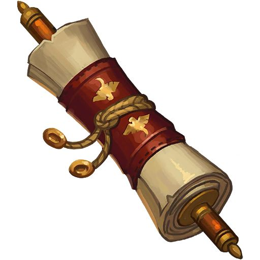

The Hero of Swornhaven...
You are a famous hero who previously defeated a dragon that plagued
the kingdom. Now you have been tasked by the king to find artifacts
to cure a deadly disease that is spreading. You were gifted maps but
which one do you use?

A common scroll with a personal leather strap.